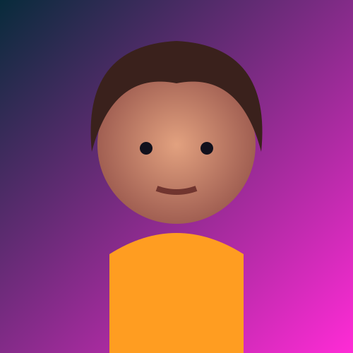

👤
Persona sintética
El rostro se crea mediante patrones aprendidos y no representa necesariamente a una persona concreta.
Una cara puede parecer completamente real y, aun así, no pertenecer a nadie.
Explora rostros sintéticos, tecnología generativa, aplicaciones, riesgos y alfabetización digital.

*Datos descritos por el sitio oficial. Los rostros de esta infografía son ilustraciones sintéticas propias y están almacenados localmente en el repositorio.
Una demostración de generación de rostros: una imagen puede parecer una fotografía aunque la identidad representada sea sintética.
El rostro se crea mediante patrones aprendidos y no representa necesariamente a una persona concreta.
No introduces una fotografía para encontrar a alguien: el sistema genera una nueva imagen.
“Parece real” y “es real” son afirmaciones diferentes.
El sitio actual señala StyleGAN3 para sus rostros. Esta es una explicación visual simplificada.
El modelo aprende estructuras, texturas e iluminación de sus datos.
Los rasgos se organizan en un espacio de características.
Una semilla determina una combinación concreta.
La representación se convierte en una imagen.
Haz clic en cualquier rostro para ampliarlo. Usa filtros, favoritos o genera otra selección.
No te fíes solo de la apariencia. Prueba tu intuición y descubre algunas señales.

La facilidad de crear una imagen no convierte automáticamente cualquier uso en apropiado.
Un rostro sintético puede utilizarse para crear perfiles engañosos. El problema aparece cuando se utiliza para suplantar o manipular.
Una imagen convincente puede reforzar una historia falsa. Comprueba siempre el origen y el contexto.
Los rostros sintéticos pueden ser útiles para ilustrar situaciones sin publicar necesariamente la identidad de una persona real.
Cuando sea posible, contrasta la fuente original y usa detectores de IA como apoyo, no como prueba absoluta.
Crea una identidad visual que no corresponde a una persona real. El objetivo es generar una nueva imagen.
Manipula contenido relacionado con una persona real. Puede alterar rostro o voz en otro contenido.
“Una cara puede ser convincente sin ser una identidad real.”
Rostro sintético ilustrativo · no corresponde a una identidad real.